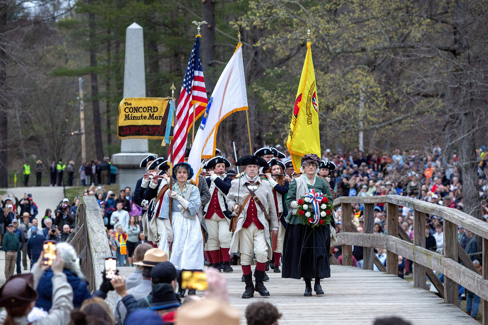

Okay, so I've been talking with some friends out of state, and I just need to come here to catch my thoughts. Patriot's Day isn't real? Really? Now, of course it's real, or else they would be giving us the day off for no reason. But I always thought, and bear with me on this one, that it had to deal with the Pats.
I know, call me stupid, call me names. Turns out it has to do with the battles of Lexington and Concord, which began what we call the American Revolution in April 19, 1775. Speaking of which, it's a bit odd we start doing anniversaries from the 4th of July in 1776. You have those battles which kickstart the Revolution, you have the Battle of Bunker Hill and the (failed) attempts to get Quebec and Canada, all before the Declaration. I get why, but still.

Anyways, it's a big deal here in Mass (and in Maine too???). You get all of Concord dressing up as Minutemen (hey Concord, the 1770s called, they want their fashion back) and doing reenactments, you got kids out of school, and they hold the Boston Marathon around that time. I always thought it was a somewhat of a big deal in the whole country, considering the whole patriotism thing, but no, it's only us weirdos who dress up as soldiers to stand in line firing a musket and taking a whole minute to reload it.